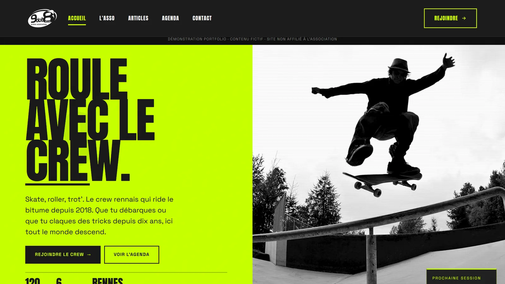

9dot8
Site vitrine complet pour une association de glisse urbaine rennaise. Maquettes par l'équipe, développement et intégration WordPress de bout en bout, livrés en une semaine et demie.
- Année
- 2026
- Contexte
- Projet de groupe, MyDigitalSchool Rennes
- Mon rôle
- Développement, intégration, mise en ligne
- Outils
- WordPress, HTML, CSS
- Lien
- Voir le site